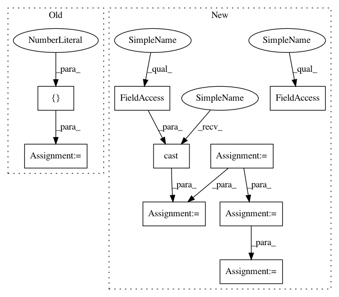

237d138e6af68e7aed794c4797f07eab2fad4261,scripts/tf_cnn_benchmarks/models/ssd_model.py,SSD300Model,get_learning_rate,#SSD300Model#Any#Any#,196
Before Change
def get_learning_rate(self, global_step, batch_size):
boundaries = [160000, 200000]
learning_rates = [1e-3, 1e-4, 1e-5]
return tf.train.piecewise_constant(global_step, boundaries, learning_rates)
def _collect_backbone_vars(self):
backbone_vars = tf.get_collection(
After Change
return cnn.top_layer
def get_learning_rate(self, global_step, batch_size):
rescaled_lr = self.get_scaled_base_learning_rate(batch_size)
// Defined in MLPerf reference model
boundaries = [160000, 200000]
boundaries = [b * self.base_lr_batch_size // batch_size for b in boundaries]
decays = [1, 0.1, 0.01]
learning_rates = [rescaled_lr * d for d in decays]
lr = tf.train.piecewise_constant(global_step, boundaries, learning_rates)
warmup_steps = int(118287 / batch_size * 5)
warmup_lr = (
rescaled_lr * tf.cast(global_step, tf.float32) / tf.cast(
warmup_steps, tf.float32))
return tf.cond(global_step < warmup_steps, lambda: warmup_lr, lambda: lr)
def get_scaled_base_learning_rate(self, batch_size):
Calculates base learning rate for creating lr schedule.
In pattern: SUPERPATTERN
Frequency: 3
Non-data size: 9
Instances
Project Name: tensorflow/benchmarks
Commit Name: 237d138e6af68e7aed794c4797f07eab2fad4261
Time: 2018-10-01
Author: haoyuzhang@google.com
File Name: scripts/tf_cnn_benchmarks/models/ssd_model.py
Class Name: SSD300Model
Method Name: get_learning_rate
Project Name: tensorflow/benchmarks
Commit Name: 237d138e6af68e7aed794c4797f07eab2fad4261
Time: 2018-10-01
Author: haoyuzhang@google.com
File Name: scripts/tf_cnn_benchmarks/models/ssd_model.py
Class Name: SSD300Model
Method Name: get_learning_rate
Project Name: tensorflow/models
Commit Name: 5e854f25098ca40a4ac80197607bf883feaeb375
Time: 2018-02-13
Author: lzc@google.com
File Name: research/object_detection/utils/learning_schedules.py
Class Name:
Method Name: manual_stepping
Project Name: OpenNMT/OpenNMT-tf
Commit Name: 352ebffaa5bd74a454c3b2b10121b2d959ade2fc
Time: 2017-08-22
Author: guillaume.klein@systrangroup.com
File Name: opennmt/models/sequence_tagger.py
Class Name: SequenceTagger
Method Name: _build